Abra o Studio e escolha BASEPLATE

Foto da tela.
Projeto novo. Role a página para baixo até a fileira Abrir um modelo e clique no primeiro, o Baseplate.
- Abriu o projeto antigo
- Feche a aba e volte para o Início.
Prepare o editor (uma vez em cada computador)

Foto da tela.
Hoje você vai digitar código. O Studio vem com duas ajudas que atrapalham quem está aprendendo: ele sugere linhas inteiras e fecha parênteses e aspas sozinho. Vamos desligar as duas.
No Windows: Arquivo → Configurações do Studio. No Mac: Roblox Studio → Configurações do Studio.
1. Na busca escreva assist e desmarque Ativar assistente de código.
2. Apague a busca, escreva fechamento e desmarque Colchetes de fechamento automáticos e Aspas de fechamento automáticas.
Feche a janela. Fica guardado no computador — se você já fez isto numa aula passada neste mesmo computador, é só conferir que as caixinhas continuam vazias.
- Não acho Configurações do Studio
- No Windows é o menu Arquivo, bem no canto de cima à esquerda da janela.
- A busca não acha nada
- Escreva só assist, sem acento e sem mais nada.
- Já está tudo desmarcado
- Ótimo — este computador já foi preparado. Feche a janela e siga.
- Por que desligar?
- Ligado, o editor escreve linhas que você não pediu, e o Tab aceita a sugestão em vez de recuar. Desligado, o que está escrito na aula é exatamente o que você digita.
Vá para a aba MODELO
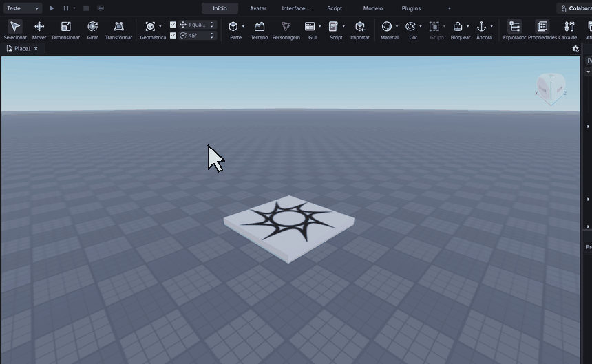
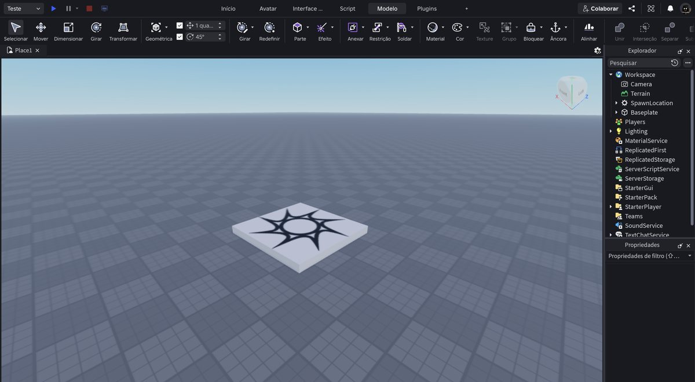
O clipe repete sozinho. Repare onde o cursor vai antes de clicar.
Clique em Modelo.
- Não acho
- Fica entre Script e Plugins.
Crie a porta
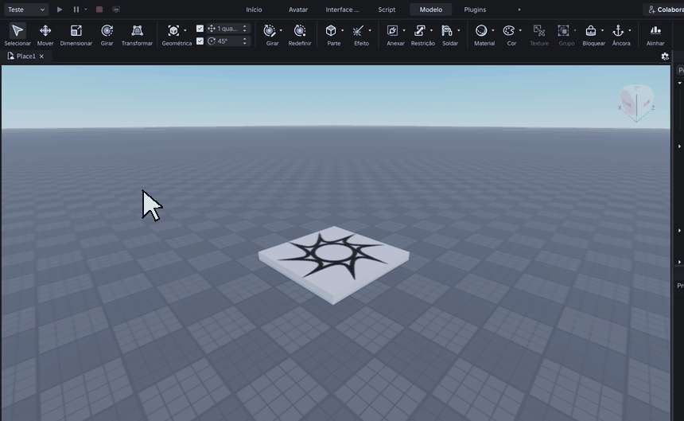
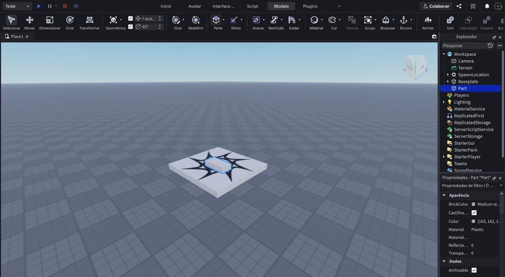
O clipe repete sozinho. Repare onde o cursor vai antes de clicar.
Clique no desenho do botão Parte. Leve a câmera até ela (clique no nome na lista, mouse no mundo 3D, tecla F, depois S para afastar).
- Nada aconteceu
- Você clicou na palavra, não no desenho.
Ancore
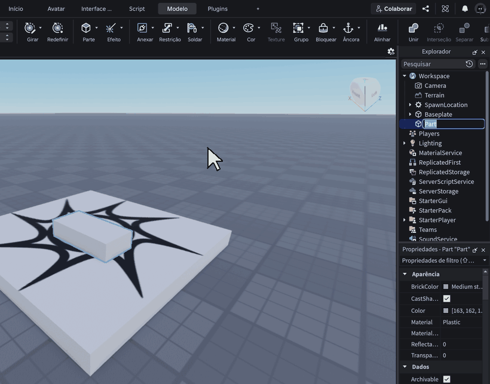
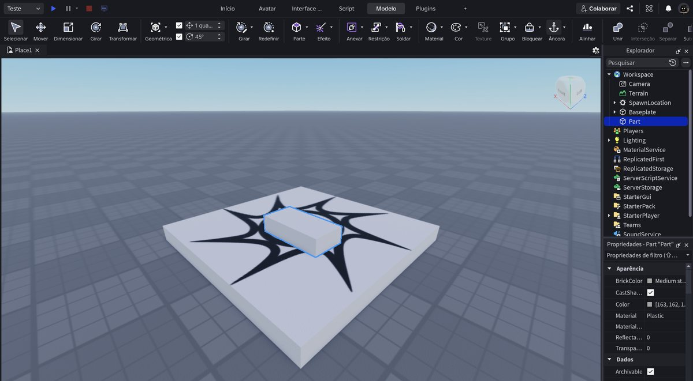
O clipe repete sozinho. Repare onde o cursor vai antes de clicar.
Clique em Âncora. Criou, ancorou.
- Não sei se ancorou
- Busque anchor nas Propriedades.
Deixe com cara de porta
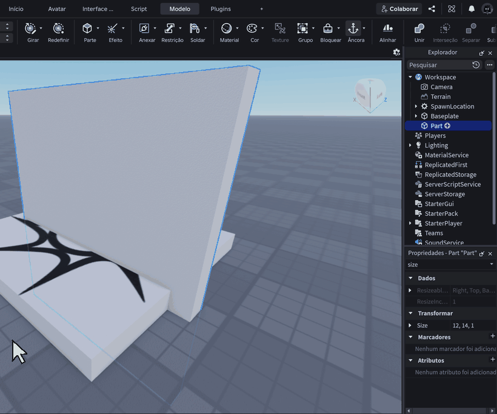
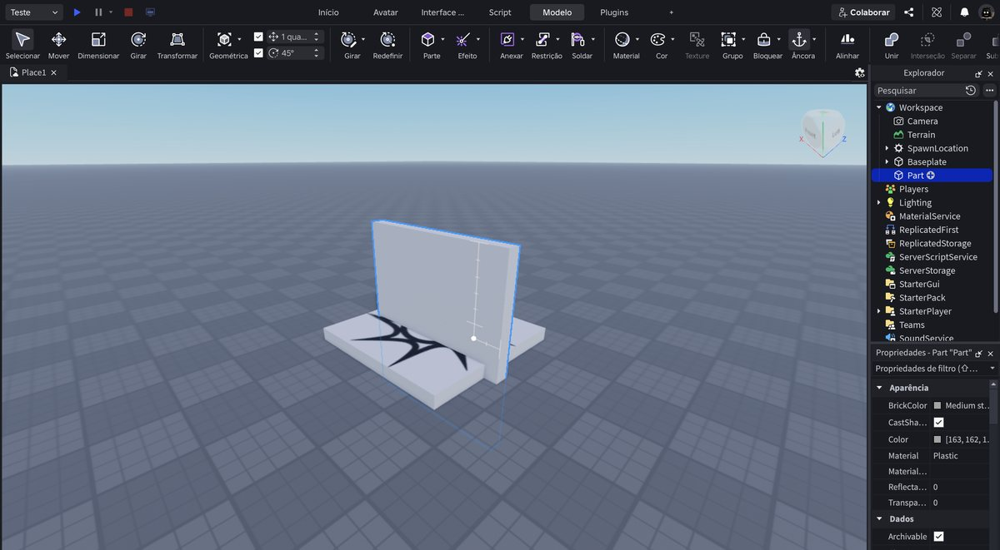
O clipe repete sozinho. Repare onde o cursor vai antes de clicar.
Na busca das Propriedades escreva size. Duplo clique no valor, Ctrl + A, escreva 12, 14, 1 e Enter.
Alta, larga e fininha — uma parede com buraco de passagem.
Depois apague a busca.
- Só mudou um número
- Faltou o Ctrl + A.
- Ficou deitada
- Você trocou a ordem. São largura, altura, espessura: 12, 14, 1.
- Sumiu tudo do meu mundo!
- Ctrl + Z várias vezes até tudo voltar. Isso acontece quando o Ctrl + A pega a lista de peças em vez do campo de texto, e aí o Delete apaga as peças. Depois do Ctrl + A, digite os números — nunca aperte Delete.
Pinte de vermelho
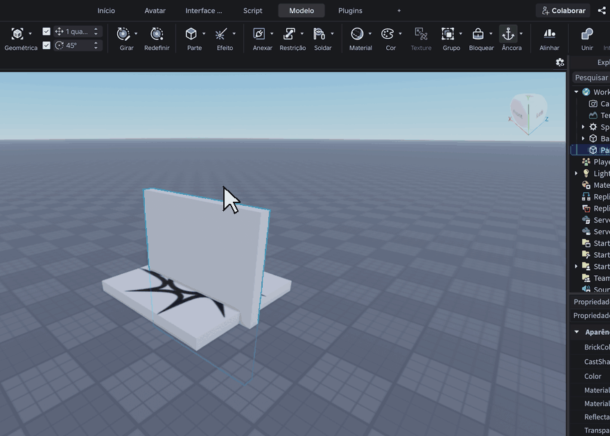
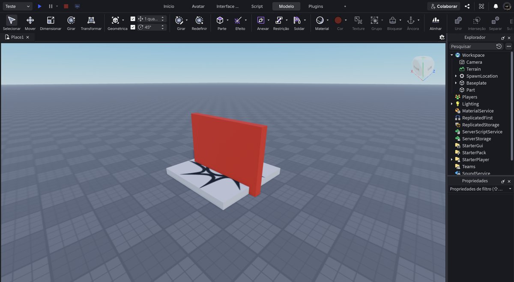
O clipe repete sozinho. Repare onde o cursor vai antes de clicar.
Setinha do Cor → hexágono vermelho → clique no círculo do botão Cor.
- Não pintou
- Falta o clique no círculo do botão Cor.
Chame de PORTA — com P maiúsculo
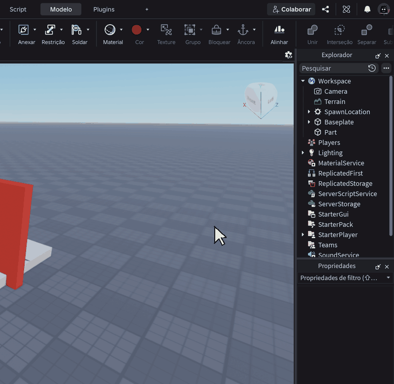
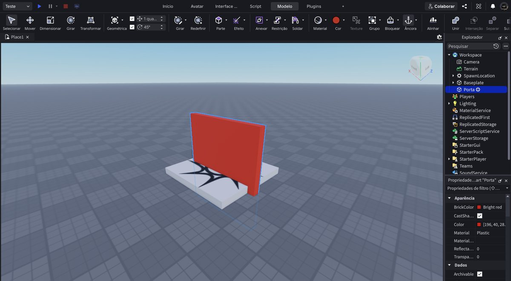
O clipe repete sozinho. Repare onde o cursor vai antes de clicar.
Botão direito na peça, na lista → Renomear → Porta → Enter.
Este nome é levado a sério. Daqui a pouco o script vai procurar uma peça chamada exatamente Porta. Com porta minúsculo, ou Porta1, ele não acha.
- Escrevi errado
- Botão direito → Renomear de novo. Vale a pena conferir letra por letra.
Afaste a porta
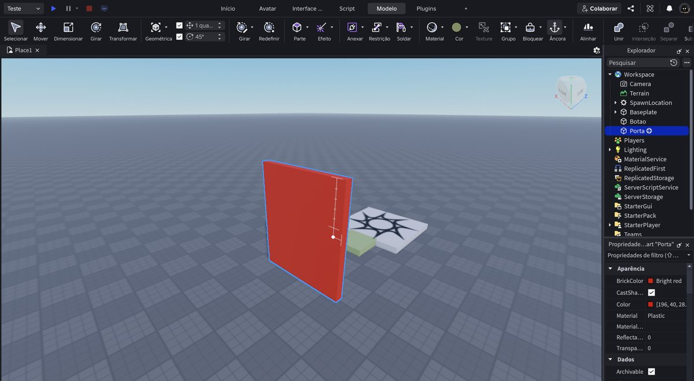
Foto da tela.
Na busca das Propriedades escreva position. Na primeira linha Position, duplo clique no valor, Ctrl + A, escreva 0, 7, -20 e Enter.
Isso põe a porta a vinte passos de distância do lugar onde você nasce.
- Aparecem três linhas Position
- Use a primeira, a que está embaixo de CFrame.
- A porta sumiu da tela
- Ela foi para longe mesmo. Clique nela na lista e aperte F, depois S algumas vezes.
- Ela ficou enterrada no chão
- O número do meio é a altura. Aumente: 0, 7, -20.
- Sumiu tudo do meu mundo!
- Ctrl + Z várias vezes até tudo voltar. Isso acontece quando o Ctrl + A pega a lista de peças em vez do campo de texto, e aí o Delete apaga as peças. Depois do Ctrl + A, digite os números — nunca aperte Delete.
Crie o botão
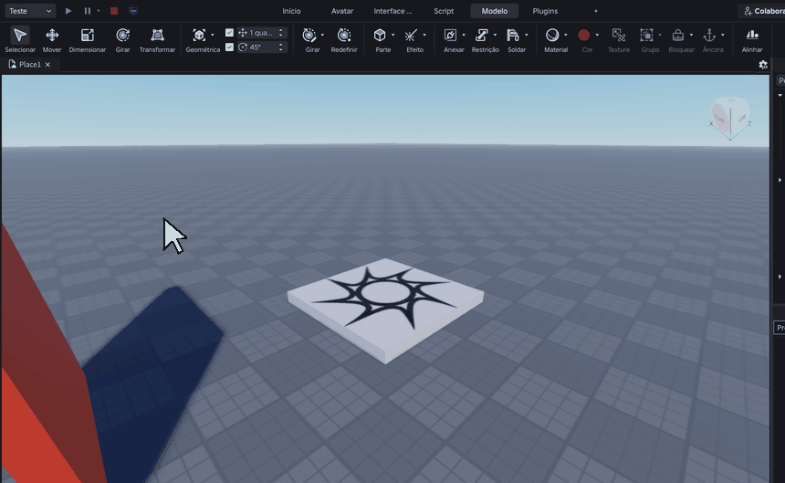
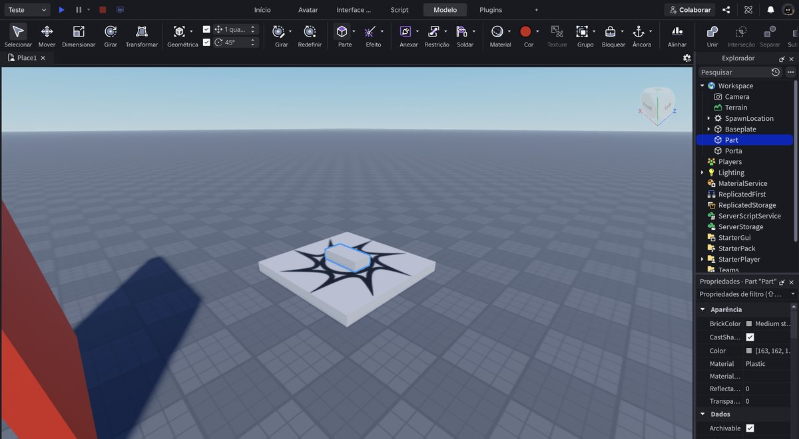
O clipe repete sozinho. Repare onde o cursor vai antes de clicar.
Clique de novo no desenho do Parte. Ancore.
Depois, pelas Propriedades: size = 5, 1, 5 e position = 0, 0.5, -8.
Fica uma plaquinha baixa no chão, entre você e a porta.
- A peça nova ficou dentro da porta
- Confira o position: 0, 0.5, -8. O -8 é mais perto que o -20 da porta.
- Esqueci de ancorar
- Clique nela e em Âncora. Botão que cai não funciona.
Pinte o botão de verde
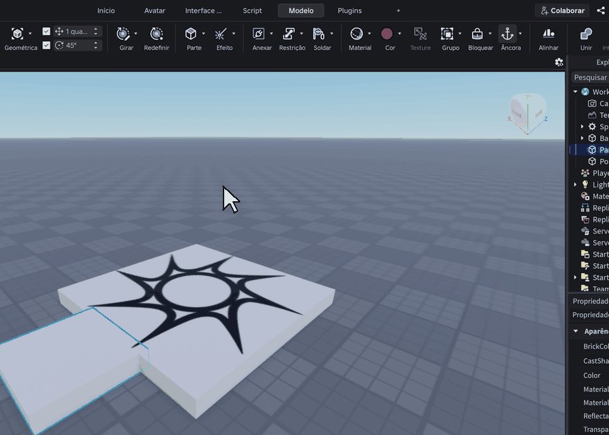
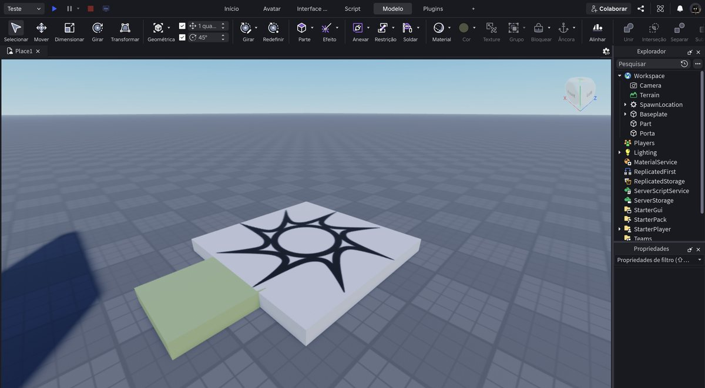
O clipe repete sozinho. Repare onde o cursor vai antes de clicar.
Mesma coisa: setinha do Cor → verde → círculo do botão Cor.
Verde porque ele convida a pisar.
- Pintei a porta sem querer
- Ctrl + Z, clique na peça certa e repita.
Chame de BOTAO
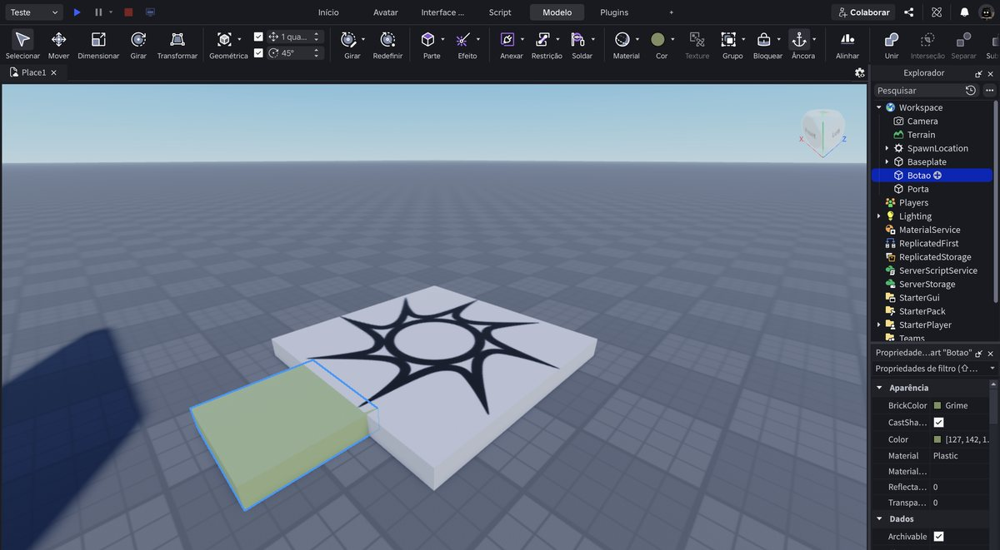
Foto da tela.
Botão direito → Renomear → Botao (sem acento) → Enter.
Sem acento porque nome de peça com acento dá problema em algumas partes do Roblox. Fica a dica para a vida.
- Posso pôr acento?
- Melhor não. Use Botao.
Coloque o Script dentro do BOTÃO
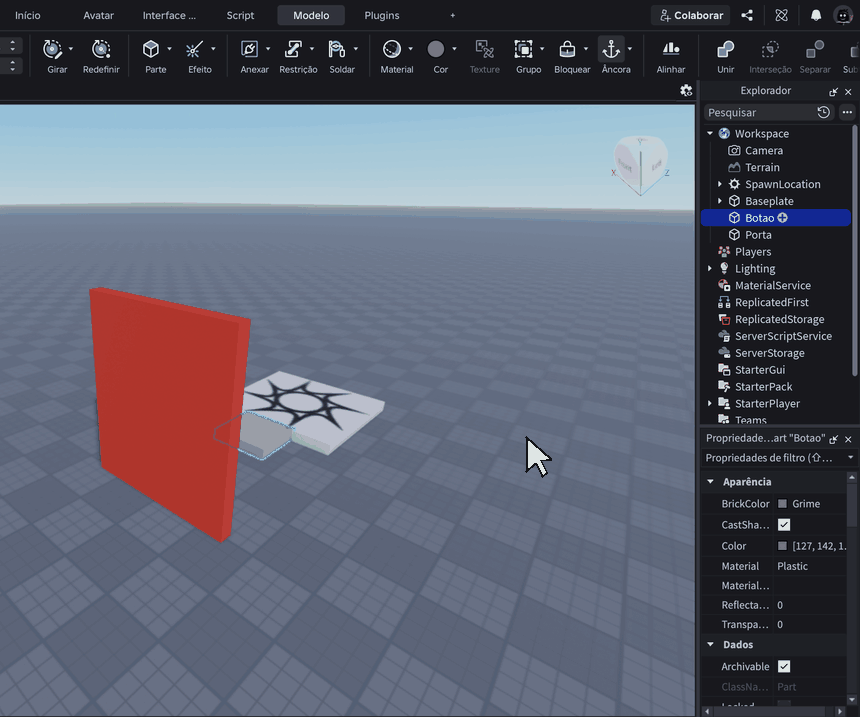
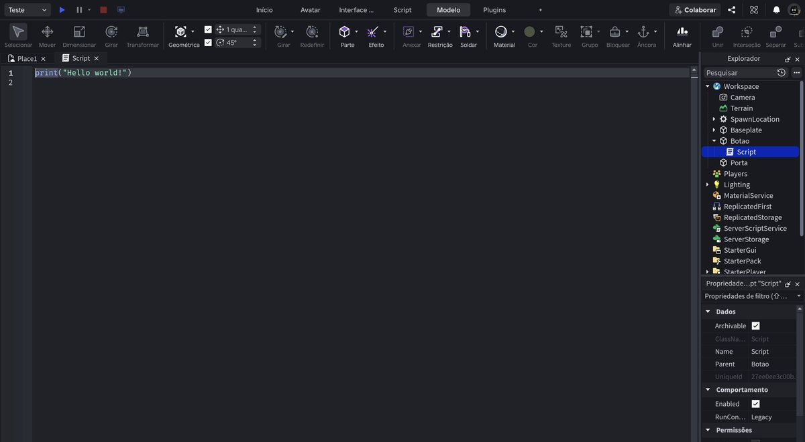
O clipe repete sozinho. Repare onde o cursor vai antes de clicar.
Clique em Botao na lista, clique no + e escolha Script.
Repare bem: o script vai no botão, não na porta. Quem sente o pé é o botão; a porta só obedece.
- Pus na porta sem querer
- Apague com Delete e refaça com o Botao selecionado.
- Não aparece o +
- Clique uma vez na linha primeiro.
Escreva o código
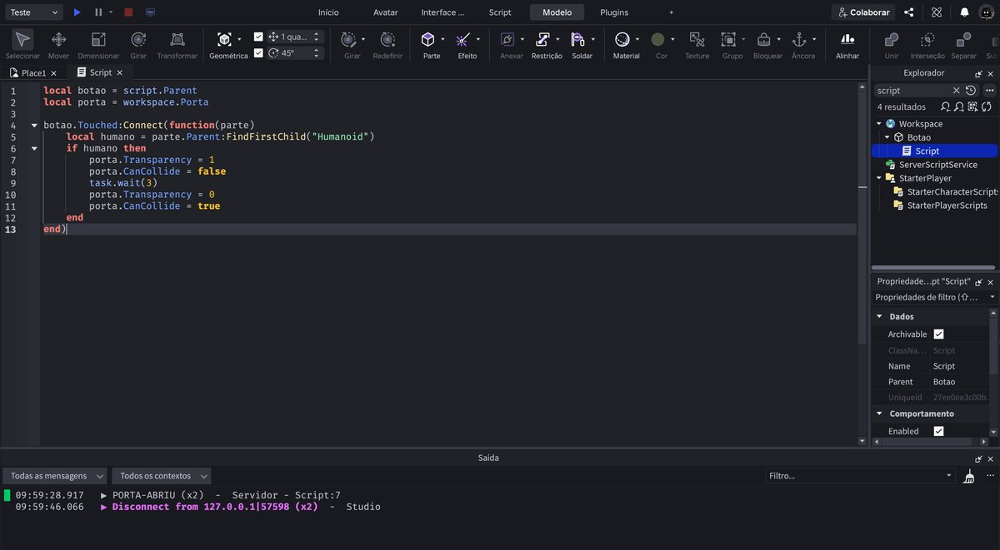
Foto da tela.
Apague a linha pronta (clique no fim dela e segure Backspace) e escreva:
- local botao = script.Parent
- local porta = workspace.Porta
- botao.Touched:Connect(function(parte)
- local humano = parte.Parent:FindFirstChild("Humanoid")
- if humano then
- porta.Transparency = 1
- porta.CanCollide = false
- task.wait(3)
- porta.Transparency = 0
- porta.CanCollide = true
- end
- end)
"I sai Ï).A novidade está na linha 2. Todo o resto você já viu na aula da lava.
Não digite as linhas em cinza. O editor escreve os end sozinho quando você aperta Enter. E não aperte Tab — ele já empurra as linhas para dentro.
- Sobraram end a mais
- Você digitou os que o editor já tinha escrito. Apague os extras até o código ficar igual ao da aula.
- Risco vermelho na linha 2
- Confira: workspace é minúsculo, e Porta tem P maiúsculo — igualzinho ao nome que você deu.
- Risco vermelho no fim
- Faltou um end ou o ).
- Diz que Porta não existe
- O nome da peça está diferente do nome no código. Um dos dois está errado.
- Apareceu uma caixinha cinza com sugestões
- É o editor tentando adivinhar. Aperte Esc para fechá-la e continue digitando. Se você apertar Enter com ela aberta, ele escreve a sugestão no lugar do que você ia escrever.
- A aspa saiu errada (Ï, ä, ou duas aspas juntas)
- A aspa do teclado brasileiro é tecla muda. Antes de vogal ela vira trema; no fim da linha ela às vezes dobra. O conserto é sempre o mesmo: apague o que saiu errado e digite a aspa seguida da barra de espaço. Sai uma aspa limpa, sem espaço.
Entenda a linha nova
Foto da tela.
local porta = workspace.Porta
workspace é o mundo inteiro — tudo que existe no seu jogo. O ponto quer dizer “de dentro dele”. Então a linha lê assim: “procure no mundo a peça chamada Porta e chame ela de porta”.
Antes você só usava script.Parent, que é “a peça onde eu moro”. Agora você consegue pegar qualquer peça, esteja onde estiver.
É por isso que o nome tem que bater exatamente. O Roblox procura pelo nome, não adivinha.
- E se eu tiver duas peças chamadas Porta?
- Ele pega uma só, e você não escolhe qual. Nomes repetidos dão confusão — use Porta1, Porta2.
Jogue e pise no botão
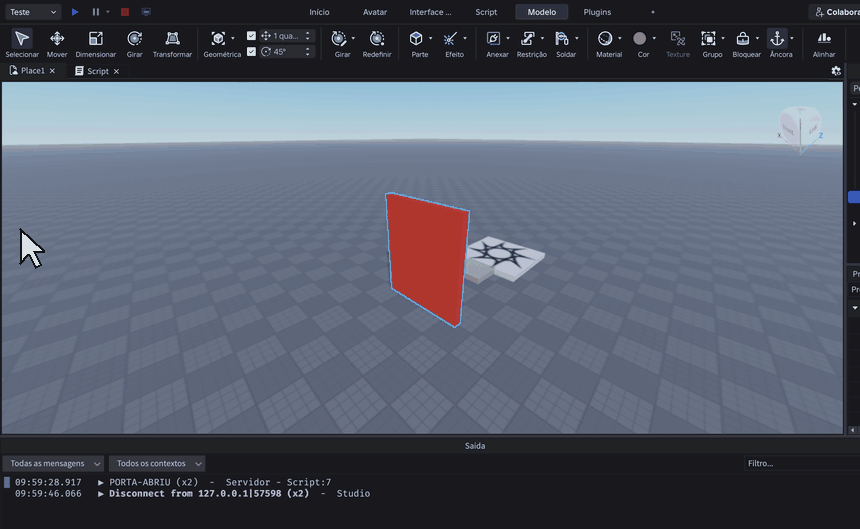
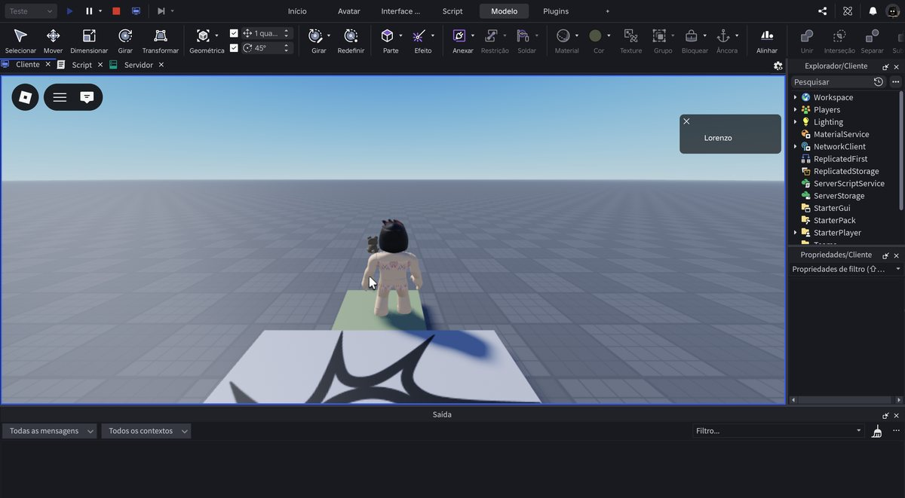
O clipe repete sozinho. Repare onde o cursor vai antes de clicar.
Volte para Place1, aperte o ▶ e ande até a plaquinha verde.
No instante em que você pisa, a porta vermelha lá na frente desaparece. Três segundos depois ela volta.
- Piso e não acontece nada
- Três conferências: o Script está dentro do Botao? O nome da porta é Porta? Sobrou risco vermelho?
- A porta some mas eu não consigo atravessar
- Faltou porta.CanCollide = false. Transparente ainda barra.
- A porta some e não volta
- Faltam as duas últimas linhas, que desfazem.
- Erro escrito em vermelho na tela
- Leia o nome que ele reclama. Quase sempre é a peça Porta com o nome diferente.
Atravesse
Foto da tela.
Agora o desafio de verdade: pise no botão e corra até passar pela porta antes dos três segundos acabarem.
Se não der tempo, é só mudar o task.wait(3) para task.wait(5).
- Impossível, é muito rápido
- Aumente o tempo, ou ponha o botão mais perto da porta.
- Fiquei preso dentro da porta
- Ela voltou com você em cima. Não é bug, é o jogo. Saia e tente de novo.
Faça o contrário
Foto da tela.
Troque só os quatro valores das linhas de dentro do if. Elas ficam assim, nesta ordem:
porta.Transparency = 0
porta.CanCollide = true
task.wait(3)
porta.Transparency = 1
porta.CanCollide = false
Ou seja: onde estava 1 ponha 0, onde estava 0 ponha 1, e troque cada false por true e cada true por false.
Antes de jogar, a porta precisa começar invisível: clique nela na lista e, na busca das Propriedades, ponha Transparency = 1 e desmarque CanCollide.
Agora a porta aparece quando você pisa, em vez de sumir. Vira armadilha.
- Me perdi nos números
- 0 é sólida e visível, 1 é invisível. true é “dá para esbarrar”, false é “atravessa”.
- Quero voltar como estava
- Ctrl + Z no editor desfaz o que você digitou.
Coloque uma segunda porta
Foto da tela.
Duplique a porta (botão direito na Porta da lista → Duplicar), renomeie a cópia para Porta2 e mude a position dela para 10, 7, -20, para ficar ao lado da primeira.
No script, clique no fim da linha 2, aperte Enter e escreva:
local porta2 = workspace.Porta2
Depois, dentro do if, escreva uma linha da porta2 embaixo de cada linha da porta — quatro linhas novas no total:
porta2.Transparency = 1, porta2.CanCollide = false, e depois do task.wait(3) as duas que desfazem: porta2.Transparency = 0 e porta2.CanCollide = true.
Um botão, duas portas.
- Só uma some
- Você esqueceu de repetir alguma linha para a porta2.
- Diz que Porta2 não existe
- O nome da cópia na lista tem que ser exatamente Porta2.
Salve
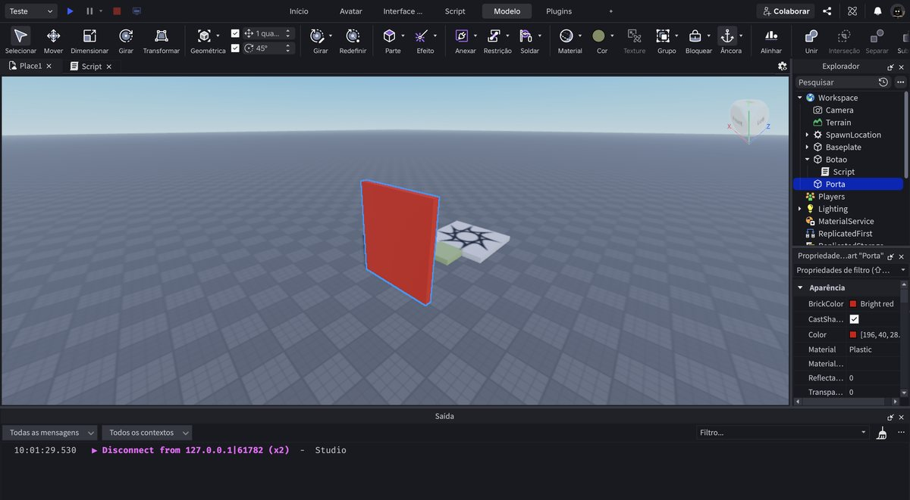
Foto da tela.
Ctrl + S → Salvar em arquivo → nome porta.
E publique, se quiser: Arquivo → Publicar na Roblox.
- Esqueci como publica
- Aula 4, passo 9.